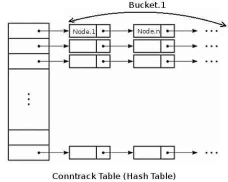

一 基础知识
(一) 模块介绍
nf_conntrack模块在kernel 2.6.15（2006-01-03发布） 被引入，支持ipv4和ipv6，取代只支持ipv4的ip_connktrack，用于跟踪连接的状态，供其他模块使用。
最常见的使用场景是 iptables 的 nat 和 state 模块：
nat 根据转发规则修改IP包的源/目标地址，靠nf_conntrack的记录才能让返回的包能路由到发请求的机器。 state 直接用 nf_conntrack 记录的连接状态（NEW/ESTABLISHED/RELATED/INVALID）来匹配防火墙过滤规则。
iptables 的 nat 通过规则来修改目的/源地址,但光修改地址不行,我们还需要能让回来的包能路由到最初的来源主机。这就需要借助 nf_conntrack 来找到原来那个连接的记录才行。而 state 模块则是直接使用 nf_conntrack 里记录的连接的状态来匹配用户定义的相关规则。例如下面这条 INPUT 规则用于放行 80 端口上的状态为 NEW 的连接上的包。
iptables -A INPUT -p tcp -m state --state NEW -m tcp --dport 80 -j ACCEPT。
iptables中的状态检测功能是由state选项来实现iptable的。对这个选项，在iptables的手册页中有以下描述：
state
这个模块能够跟踪分组的连接状态(即状态检测)。
格式：--state XXXXX
这里，state是一个用逗号分割的列表，表示要匹配的连接状态。
在iptables中有四种状态：NEW，ESTABLISHED，RELATED，INVALID。
NEW，表示这个分组需要发起一个连接，或者说，分组对应的连接在两个方向上都没有进行过分组传输。NEW说明 这个包是我们看到的第一个包。意思就是，这是conntrack模块看到的某个连接第一个包，它即将被匹配了。比如，我们看到一个SYN包，是我们所留意 的连接的第一个包，就要匹配它。第一个包也可能不是SYN包，但它仍会被认为是NEW状态。比如一个特意发出的探测包，可能只有RST位，但仍然是 NEW。
ESTABLISHED，表示分组对应的连接已经进行了双向的分组传输，也就是说连接已经建立，而且会继续匹配 这个连接的包。处于ESTABLISHED状态的连接是非常容易理解的。只要发送并接到应答，连接就是ESTABLISHED的了。一个连接要从NEW变 为ESTABLISHED，只需要接到应答包即可，不管这个包是发往防火墙的，还是要由防火墙转发的。ICMP的错误和重定向等信息包也被看作是 ESTABLISHED，只要它们是我们所发出的信息的应答。
RELATED，表示分组要发起一个新的连接，但是这个连接和一个现有的连接有关，例如：FTP的数据传输连接 和控制连接之间就是RELATED关系。RELATED是个比较麻烦的状态。当一个连接和某个已处于ESTABLISHED状态的连接有关系时，就被认为 是RELATED的了。换句话说，一个连接要想是RELATED的，首先要有一个ESTABLISHED的连接。这个ESTABLISHED连接再产生一 个主连接之外的连接，这个新的连接就是RELATED的了，当然前提是conntrack模块要能理解RELATED。ftp是个很好的例子，FTP- data连接就是和FTP-control有RELATED的。还有其他的例子，
INVAILD，表示分组对应的连接是未知的，说明数据包不能被识别属于哪个连接或没有任何状态。有几个原因可以产生这种情况，比如，内存溢出，收到不知属于哪个连接的ICMP错误信息。一般地，我们DROP这个状态的任何东西。
并不是所有Linux发行版会启用nf_conntrack模块
nf_conntrack 结构和 hashtable

在内核中，连接跟踪表是一个二维数组结构的哈希表(hash table)，哈希表的大小记作HASHSIZE，哈希表的每一项(hash table entry)称作bucket，因此哈希表中有HASHSIZE个bucket存在，每个bucket包含一个链表(linked list)，每个链表能够存放若干个conntrack条目(bucket size)。对于一个新收到的数据包，内核使用如下步骤判断其是否属于一个已有连接：
1 内核提取此数据包信息(源目IP，port，协议号)进行hash计算得到一个hash值，在哈希表中以此hash值做索引，索引结果为数据包所属的bucket(链表)。这一步hash计算时间固定并且很短
2 遍历hash得到的bucket，查找是否有匹配的conntrack条目。这一步是比较耗时的操作，bucket size越大（bucket长度越长），遍历时间越长
- CONNTRACK_MAX代表系统所有追踪的链接数
- HASHSIZE代表哈希表大小. 因此CONNTRACK_MAX:HASHSIZE最好不要太大, 通常推荐8:1或者4:1
(二) 内核相关参数
net.netfilter.nf_conntrack_max=6000000
net.netfilter.nf_conntrack_buckets=1307648
# timeout值不变
net.netfilter.nf_conntrack_tcp_timeout_close = 10
net.netfilter.nf_conntrack_tcp_timeout_close_wait = 60
net.netfilter.nf_conntrack_tcp_timeout_established = 432000
net.netfilter.nf_conntrack_tcp_timeout_fin_wait = 120
net.netfilter.nf_conntrack_tcp_timeout_last_ack = 30
net.netfilter.nf_conntrack_tcp_timeout_max_retrans = 300
net.netfilter.nf_conntrack_tcp_timeout_syn_recv = 60
net.netfilter.nf_conntrack_tcp_timeout_syn_sent = 120
net.netfilter.nf_conntrack_tcp_timeout_time_wait = 120
net.netfilter.nf_conntrack_tcp_timeout_unacknowledged = 300
官方说明: https://www.kernel.org/doc/Documentation/networking/nf_conntrack-sysctl.txt
二 常用操作
查看nf_conntrack表当前连接数
cat /proc/sys/net/netfilter/nf_conntrack_count
查看nf_conntrack表最大连接数
cat /proc/sys/net/netfilter/nf_conntrack_max
通过dmesg可以查看nf_conntrack的状况：
dmesg |grep nf_conntrack
# dmesg |grep nf_conntrack
[ 44.139084] nf_conntrack version 0.5.0 (65536 buckets, 262144 max)
表示内核启动时，bucket数量为65536，conntrack的最大连接数为262144
查看存储conntrack条目的哈希表大小,此为只读文件
cat /proc/sys/net/netfilter/nf_conntrack_buckets
查看nf_conntrack的TCP连接记录时间
cat /proc/sys/net/netfilter/nf_conntrack_tcp_timeout_established
通过内核参数查看命令，查看所有参数配置
sysctl -a | grep nf_conntrack
通过conntrack命令行工具查看conntrack的内容
yum install -y conntrack / apt-get install -y conntrack
conntrack -L
三 不同内存情况下 ，nf_conntrack_max 和 hashsize的设置建议
可以增大 conntrack 的条目(sessions, connection tracking entries) CONNTRACK_MAX 或者增加存储 conntrack 条目哈希表的大小 HASHSIZE
默认情况下，CONNTRACK_MAX 和 HASHSIZE 会根据系统内存大小计算出一个比较合理的值：
对于 CONNTRACK_MAX，其计算公式：
CONNTRACK_MAX = RAMSIZE (in bytes) / 16384 / (ARCH / 32)
比如一个 64 位 48G 的机器可以同时处理 48*1024^3/16384/2 = 1572864 条 netfilter 连接。对于大于 1G 内存的系统，默认的 CONNTRACK_MAX 是 65535。
对于 HASHSIZE，默认的有这样的转换关系：
CONNTRACK_MAX = HASHSIZE * 8
这表示每个链接列表里面平均有 8 个 conntrack 条目。其真正的计算公式如下：
HASHSIZE = CONNTRACK_MAX / 8 = RAMSIZE (in bytes) / 131072 / (ARCH / 32)
比如一个 64 位 48G 的机器可以存储 48*1024^3/131072/2 = 196608 的buckets(连接列表)。对于大于 1G 内存的系统，默认的 HASHSIZE 是 8192。
| 序号 | 机器内存 | nf_conntrack_max上限 | nf_conntrack_max和HASHSIZE比例 | 线上设置 | max_open_files |
|---|---|---|---|---|---|
| 1 | 128G | 4194304 | 4:1 | 2621440 | 100万 |
四 超大连接数场景,直接把一些特定端口的连接，直接不追踪
如果某一端口或者某些端口，有超大量的连接，那么可以修改raw表 ，不进行连接追踪
*filter
iptables -t filter -A INPUT -m state --state RELATED,ESTABLISHED, UNTRACKED -j ACCEPT
*raw
iptables -t raw -A PREROUTING -p tcp -m set --match-set ${project_port} dst -j NOTRACK
iptables -t raw -A OUTPUT -p tcp -m set --match-set ${project_port} src -j NOTRACK
或者
iptables -A INPUT -m state --state RELATED,ESTABLISHED,UNTRACKED -j ACCEPT
iptables -t raw -A PREROUTING -p tcp -m multiport --dports 80,443 -j NOTRACK
iptables -t raw -A OUTPUT -p tcp -m multiport --sports 80,443 -j NOTRACK
参考:
- https://clodfisher.github.io/2018/09/nf_conntrack/
- https://testerhome.com/topics/7509